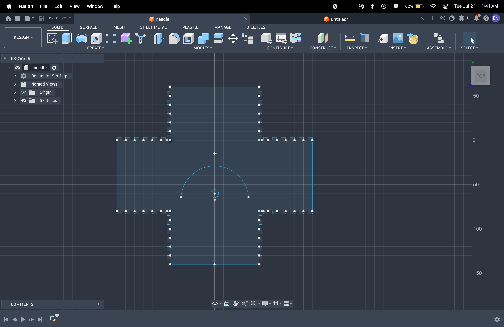

This week I started my MVP. I built off of my last assignment, where I created a sensor to detect sound. However, the sensor only detected decibles, and not pitch like I wanted it to. So, I added new code that would use Fast Fourier Transform calculations to break down all of the noise that the microphone detects and then find the loudest one. The code then compares that frequency to 440 Hz, and decides whether to turn on the LED and move the motor. Here is what my breadboard looked like.
It took a couple of tries to get the wiring right, and to not make my microcontroller overheat, but once I figured out the wiring, the device would work. It would detect the pitch being played, and then move the motor clockwise or counterclockwise depending if the input was too high or too low, and turn on the LED when the pitch was far enough away from 440 Hz.

Then, because it was just a bunch of miscellanous wires all jumbled together, I wanted to put the whole thing inside a box. I debated 3d printing it, but decided that it would take too long and that it would be simpler for me just to make a box out of cardboard. So, I did that, cutting out a hole for the motor to spin through and for the LED to peek through. I also had to soder the pins on the LED to some wires because it wouldn't be long enough to peek out of the hole in the box otherwise. Finally, this is what the final product looked like. I did not make the box big enough, and beacuse of that, some of the wires are still poking out. But, I think that's okay because my main goal for making the box was to have the front look like a tuner, and to have the motor and LED peek out of the front.